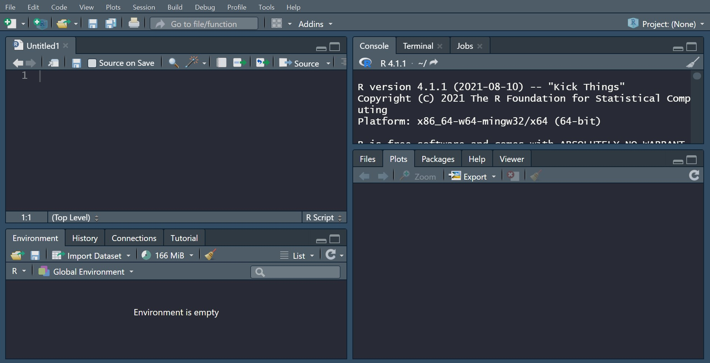

Knowldege - R 언어
R 언어란?
R은 통계계산과 그래픽을 위한 프로그래밍 언어이자 오픈소스 소프트웨어입니다. 무료로 배포되고있으므로 상용 프로그램을 구입하지 않아도 사용할 수 있습니다. R에서 활용할 수 있는 다양한 패
키지가 개발돼 있으므로, 패키지를 내려받아 다양한 기능 확장을 꾀할 수 있습니다. 현재 공식적으
로 등록된 패키지만 7600개 이상이라고 합니다. 그 외에 깃허브에서 내려받을 수 있는 패키지까지
고려하면 활용할 수 있는 패키지는 2만개가 넘는 것으로 알려져 있습니다. R은 벨 연구소에서 개발
된 S언어를 바탕으로 만들어졌으며, 뉴질랜드 오클랜드대학의 로스 이하카와 로버트 젠틀맨에 의해
시작됐습니다. 현재는 R 코어팀이 개발을 맡고 있다고 합니다. 과거에는 SPSS 같은 유료 통계 프로
그램이 많이 사용됐지만, 최근엔 R 같은 통계 언어로 자신의 입맛에 맞는 분석 결과물을 만드는 경
우가 늘고 있습니다. 한때 SPSS는 대학 내 조사방법론 강의의 필수 코스로 여겨졌지만, 지금은 서서
히 밀려나는 분위기입니다. R은 통계와 시각화에 특히 강점을 가지고 있고, 머신러닝 등에서도 활
용됩니다. 확장성이 높은 R이지만, R이 꼭 전문가만 쓸 수 있는 기술은 아닙니다. 프로그래밍 언어
를 모르는 사람들도 R에 입문해 데이터를 다루는 경우가 종종 있습니다.
*출처: [네이버 지식백과] R 언어 - 확장성 높은 데이터 프로그래밍 언어 R (용어로 보는 IT, 채반석)*
통합 개발 환경, R Studio
‘R Studio’는 R를 더 쉽게 다룰 수 있게 도와주는 일종의 통합 개발 환경입니다! 프로젝트 관리에도좋고, 함수에 대해 궁금한 점이 생긴다면 바로 도움이 되는 문서를 참조할 수 있는 점도 좋다. 훨씬
편리한 인터페이스를 제공합니다. R Studio를 실행하면 4분면으로 구분된 화면을 만날 수 있습니
다. 스크립트, 콘솔, 환경과 기록, 파일관리, 플롯, 패키지 관리 등의 작업을 한 화면에서 수행할 수
있습니다! 코드를 짜다가 궁금한 함수의 사용법을 바로 찾아볼 수도 있고, 작업하면서 만들어 저장
한 데이터도 확인할 수 있답니다. 스크립트는 코드를 짤 수 있는 공간입니다. 따로 텍스트 편집기를
사용할 필요가 없이 프로젝트 단위로 관리할 수 있죠. 기본 R 스크립트뿐만 아니라 R 마크다운 문서
를 활용해 다양한 형태의 출력물(HTML, PDF, DOC)로 변환할 수도 있습니다. 특히 R 스튜디오에서
는 도움말을 쉽게 확인할 수 있는 게 가장 큰 장점입니다. 모르는 함수나 패키지 앞에서 물음표(?)를
넣고 검색하면 참고문서를 확인할 수 있습니다. 비록 영어로 돼 있긴 하지만, 참고문서는 굉장히 자
세한 편입니다.
*출처: [네이버 지식백과] R 언어 - 확장성 높은 데이터 프로그래밍 언어 R (용어로 보는 IT, 채반석)*

경영정보학과 학우님들이라면 이번 1학년 2학기 '경영통계' 과목을 통해서 R언어를 접하고, R
Studio를 사용해보셨을텐데요. 저도 마찬가지로 R Studio를 이용해서 데이터 분석도 하고, 그래프
로 시각화 하는 등 여러가지 작업을 했습니다. 특히나 이번 팀 프로젝트로 데이터 수집부터 분석까
지 팀원들끼리 회의하며 진행했었습니다. 사람들 상대로 설문조사도 진행하여 데이터를 수집했고,
엑셀 정리 후 R Studio에서 분석을 진행했습니다. 저희 팀은 일원분산분석과 독립성 검정을 시도했
었는데, 종속변수로 잡았던 데이터가 연속형 변수가 아니라는 판단이 나와 일원분산분석을 포기해
야만 했습니다. 그래서 범주형 변수인 factor로 바꾸어 독립성 검정을 진행했답니다. ㅠㅠ 이렇게
프로젝트를 진행하며 직접 분석을 해보니까 데이터 분석에서 중요한 것은 분석 방법도 중요하지만
변수의 종류도 매우 중요하다는 것을 알게 되어 유익한 배움이었다는 생각이 들었습니다. 다른 분
석도 해보고 싶을 정도로 신기하고 깨달음이 많았던 경험이었어요! 학우님들도 그렇게 생각하시나
요?